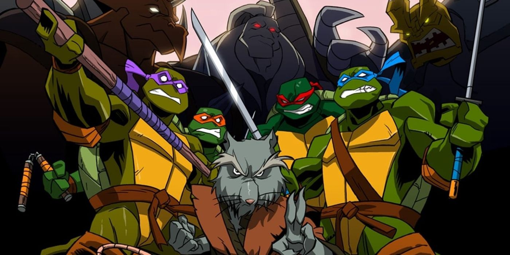

About the Turtles
The Hero Turtles are awesome. They were popular cartoon and action figure character franchise from the 80s and are still going strong today. They were born from the ooze and protectors of NYC.
Who are the Turtles?
What are their personalities
- Leonardo-The leader
- Donatello-The brains
- Raphael-The serious one
- Michalangelo-The fun one
The Turtles enemies
The Turtles have many sworn enemies who want to take them down. Click on the links to see them.